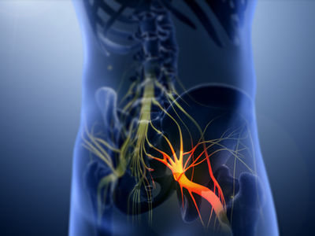
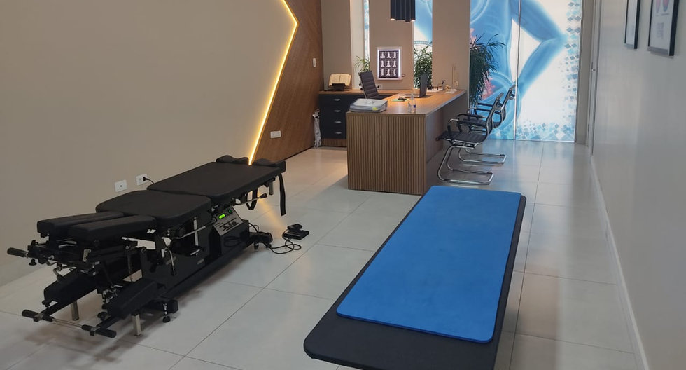
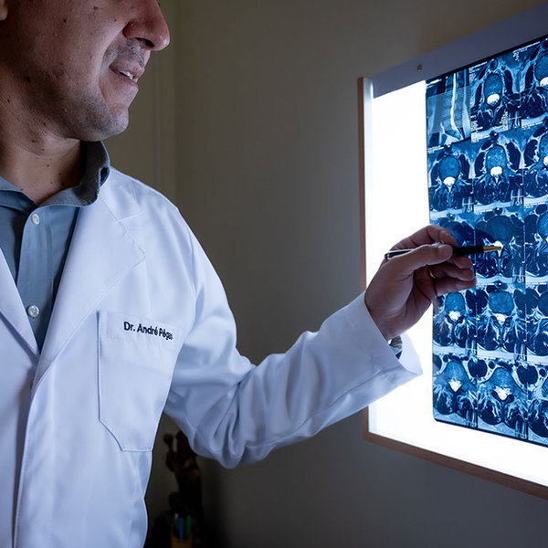
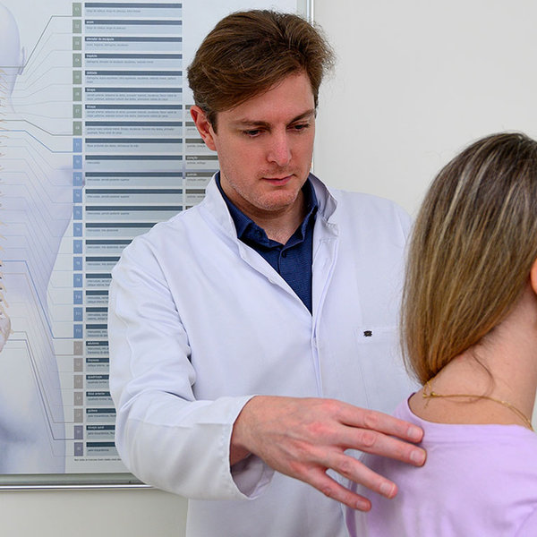

Dor no Nervo Ciático? A Queimação que Desce para a Perna Tem Tratamento sem Cirurgia
A tecnologia de descompressão dinâmica computadorizada afasta as vértebras e alivia o pinçamento da raiz nervosa sem agulhas, cortes ou internação.

O Caminho da Dor Ciática
Quando a raiz nervosa sofre pinçamento na coluna lombar, o reflexo doloroso se propaga em cadeia por todo o membro inferior.
Lombar
Origem da compressão
Glúteo
Ponto de fisgada
Coxa
Queimação irradiada
Pé
Formigamento e perda de força
A Maca de Descompressão Computadorizada
Engenharia de alta precisão que calcula a tração exata para afastar as vértebras milimetricamente, reidratar o disco e liberar a raiz nervosa.

Tração Milimétrica Computadorizada
Força exata calculada para sua coluna, sem trancos manuais.
Alívio da Pressão no Disco
Abre espaço entre as vértebras e recolhe a hérnia.
Comparativo Biomecânico: Antes vs. Depois
Veja a transformação mecânica direta ocorrida no segmento lombar entre a raiz sufocada e a descompressão computadorizada.
Vértebras coladas, disco comprimido, dor constante na perna.
Espaço restaurado, nervo desimpedido, volta dos movimentos sem dor.
Casos Reais: Retorno Rápido à Mobilidade
Resultados de pacientes que sofriam com travamento ciático e recuperaram a independência funcional sem cirurgia.
Voltei a dirigir sem queimação
Alívio rápido da queimação na perna logo nas primeiras semanas na maca.
Consigo caminhar sem mancar
A descompressão destravou a lombar e devolveu a força para caminhar.
Rotina ativa recuperada sem cirurgia
Tratamento seguro, indolor e com acompanhamento especializado em cada sessão.
Atendimento na UNIDADE ARAUCÁRIA - PR
Estrutura planejada com equipamentos homologados de padrão internacional e equipe pós-graduada com registro CREFITO.
Espaço Planejado para o Alívio da Coluna



Fisioterapeutas Responsáveis
Dúvidas Frequentes sobre a Descompressão Ciática
Respostas diretas às principais questões sobre o tratamento na maca computadorizada.